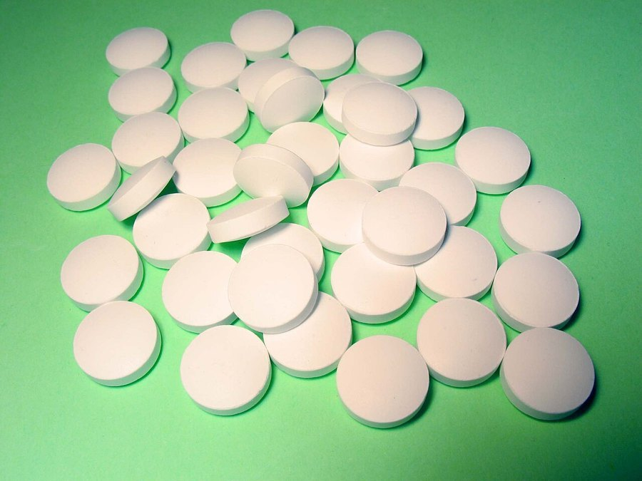

Vitamin K and Brain Health: An Emerging Nutrient Worth Watching
Vitamin K built its reputation on blood clotting and strong bones. A newer line of research is asking a different question: does it matter for the brain too?

Photo: David Richfield / Wikimedia Commons / CC BY-SA 3.0
Key takeaways
- Vitamin K's best-established roles are blood clotting and bone metabolism, not cognition. Its brain research is newer and smaller in scale.
- Interest centers on sphingolipids, a class of fats concentrated in brain cell membranes and myelin, which vitamin K helps synthesize.
- Most human studies so far are observational, linking higher vitamin K status to better cognitive scores in older adults, not controlled trials proving cause and effect.
- K1 and K2 are not identical, and most supplement labels don't disclose which form, or how much, they contain.
- If you take a blood thinner like warfarin, talk to your doctor before changing vitamin K intake in either direction.
Ask someone what vitamin K does and, if they know at all, they'll probably say something about blood clotting. That's fair. It's the vitamin's original claim to fame, discovered in the 1930s specifically for its role in coagulation. Bone health research added a second chapter later. Now a smaller, newer body of research is opening a third: what vitamin K might do inside the brain. It's early, it's nowhere near as settled as the clotting story, and it is not a reason to expect a supplement to sharpen your memory. Here's what's actually known.
Why would a clotting vitamin matter for the brain at all?
The connection researchers are chasing isn't about blood. It's about a class of fats called sphingolipids, which make up a meaningful share of the fatty membranes surrounding brain cells and the myelin sheaths that insulate nerve fibers. Vitamin K appears to act as a cofactor in enzymes involved in sphingolipid synthesis. Since healthy myelin and cell-membrane structure matter for how efficiently neurons communicate, that biological pathway is the reason vitamin K showed up on cognitive researchers' radar in the first place. It's a plausible mechanism, not proof of a real-world cognitive effect on its own.
What does the actual research show?
Most of the human evidence comes from observational studies that measure vitamin K status, sometimes through blood levels, sometimes through dietary intake, and compare it against cognitive test scores in older adults. Several of these studies have found an association between higher vitamin K status and better performance on measures of episodic memory. That's a real, published pattern. It is also, by design, unable to prove that vitamin K caused the difference. People who eat more leafy greens, a major dietary source of vitamin K1, also tend to have healthier diets and lifestyles overall, and any of those factors could be doing the real work. A smaller number of randomized trials have tested vitamin K supplementation directly, with mixed and inconclusive results so far. This is a nutrient in the early stages of investigation, not one with a settled cognitive benefit.
What's the difference between K1 and K2, and does it matter here?
Vitamin K1, or phylloquinone, is the form found in kale, spinach, broccoli and other leafy greens, and it's the primary form involved in blood clotting. Vitamin K2, or menaquinone, comes from fermented foods like natto, some cheeses, and animal products, and is also produced in smaller amounts by bacteria in the gut. K2 has drawn more attention in bone and cardiovascular research, partly because it seems to circulate longer in the body. Most of the brain-focused studies to date haven't cleanly separated K1 from K2, which is a real limitation. If a supplement label doesn't specify which form it uses, or in what dose, you're not able to compare it meaningfully against the research at all.
| Form | Main sources | Best-studied role |
|---|---|---|
| Vitamin K1 (phylloquinone) | Leafy greens, some vegetable oils | Blood clotting |
| Vitamin K2 (menaquinone) | Fermented foods, cheese, gut bacteria | Bone and cardiovascular health |
COMPLEX
The memory formula we rate highest in 2026
One formula combined a fully transparent, clinically-dosed label, citicoline, bacopa, phosphatidylserine and B-vitamins, with a 60-day guarantee.
See Today's Price →How much vitamin K do you actually need?
The adequate intake set by U.S. health authorities is 90 micrograms a day for adult women and 120 micrograms a day for adult men. That's a modest amount, and most people who regularly eat leafy greens meet it through diet without thinking about it much. A cup of cooked kale or spinach alone can supply several times the daily amount in K1. True deficiency is uncommon in healthy adults eating a varied diet, though it can occur with certain fat-malabsorption conditions, since vitamin K is fat-soluble and needs dietary fat to be absorbed properly.
Who should skip vitamin K supplements, or check with a doctor first?
Anyone on warfarin or a similar vitamin K antagonist blood thinner needs to talk to their doctor before changing vitamin K intake in either direction. These medications work specifically by interfering with vitamin K's role in clotting, so a sudden increase or decrease in intake can throw off how well the drug is dosed. People with certain liver conditions, or anyone already taking multiple supplements, should also run a new addition past a physician or pharmacist first. This is a case where "natural" doesn't mean "no interactions to worry about."
Should you take a vitamin K supplement for brain health?
Based on where the evidence actually stands, there isn't a strong case for adding a vitamin K supplement specifically to support memory or cognition right now. The observational link to cognitive performance is genuinely interesting and worth continued research, but it hasn't cleared the bar of a well-designed trial showing a real cognitive benefit from supplementation. If you eat leafy greens regularly, you're likely already getting adequate K1. If you're looking for ingredients with a more established evidence base for memory support, formulas built around citicoline, bacopa monnieri or omega-3s currently have considerably more research behind them. See our ranked guide to memory formulas for how those stack up, or our explainer on citicoline for memory for one of the better-studied options.
Frequently asked questions
Does vitamin K actually help the brain?
Vitamin K, particularly vitamin K2, is being studied for a possible role in brain health because of its involvement in sphingolipid metabolism, a class of fats concentrated in brain cell membranes. The research is still early and mostly observational. It does not yet support vitamin K as a treatment for memory loss or cognitive decline.
What's the difference between vitamin K1 and K2?
Vitamin K1 (phylloquinone) comes mainly from leafy green vegetables and is the form most involved in blood clotting. Vitamin K2 (menaquinone) comes from fermented foods and some animal products, is made in smaller amounts by gut bacteria, and is the form most studied for bone and cardiovascular health. Most brain-focused research to date has focused on K2 or on total vitamin K status rather than isolating one form.
How much vitamin K do you need per day?
The adequate intake set by U.S. health authorities is 90 micrograms per day for adult women and 120 micrograms per day for adult men. Most people who eat a normal, varied diet with some leafy greens meet this without supplementing. Labels rarely disclose how much K1 versus K2 a blend provides, which matters if you're trying to compare products.
Who should be careful with vitamin K supplements?
Anyone taking warfarin or another vitamin K antagonist blood thinner should talk to their doctor before changing vitamin K intake in either direction, since vitamin K directly affects how these medications work. People with certain liver conditions should also check with a physician first.
Not every promising nutrient has caught up to the evidence yet
Vitamin K's brain research is early. If you want ingredients with a deeper evidence base behind them today, see the memory formulas our editors rate highest for 2026.
See the Top 5 Memory Formulas →Related: Citicoline for memory · Omega-3 for brain health · How to improve memory · Best memory formulas of 2026